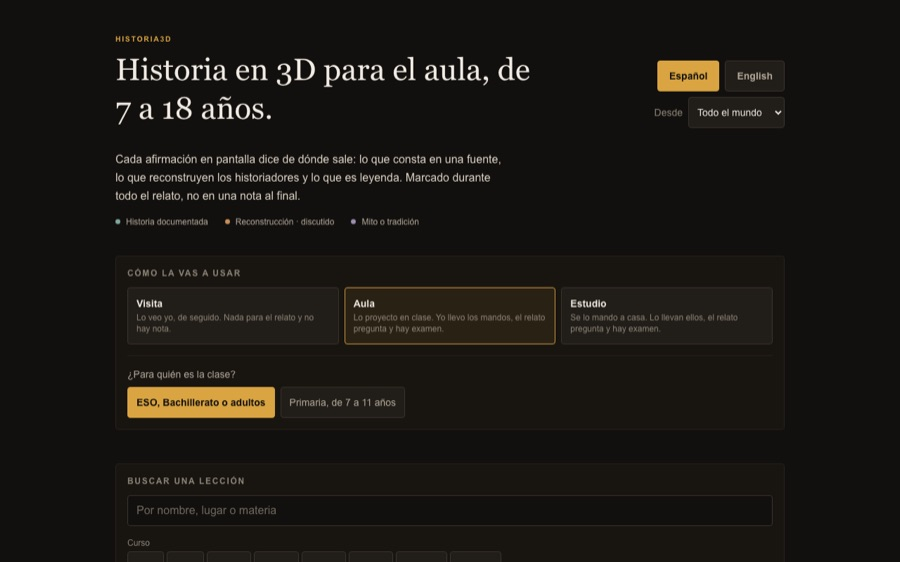

Historia3D
An educational web app for schools that teaches history through interactive 3D scenes you move through time with a slider. Every claim on screen is labelled as documented, reconstructed or legend. In Spanish and English.
Open the live app